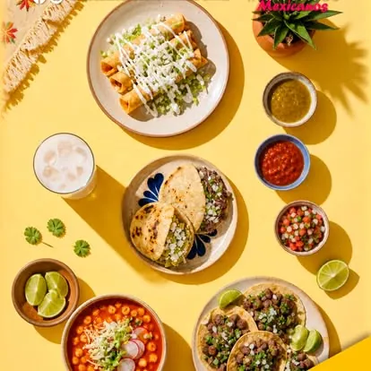

Masa caliente.
Salsa de la casa.
Mesa compartida.
Gorditas de migas, sopes y tacos al pastor hechos al momento, a media cuadra del corazón de Querétaro — sin lujos, sin prisa, como siempre han sido.
No inventamos nada.
Lo seguimos haciendo bien.
La gordita queretana de migas no se explica: se hace. Masa quebrada, comal caliente y un relleno que se sirve al momento, igual que se ha hecho siempre en el Centro Histórico de Querétaro.
Aquí no hay atajos ni menú de temporada. Hay mesas labradas en forma de tronco de árbol que se comparten con quien llegue, papel picado colgando del techo, y una cocina que no para en toda la tarde.
Lo que pide la gente antes de sentarse
Seis platillos que resumen por qué llevan generaciones de queretanos cruzando el Centro para venir a comer aquí.
Mesas de tronco labrado, papel picado y ruido de cocina de fondo

Así se ve una mesa servida aquí
Taquitos, quesadillas y tacos recién hechos, servidos para compartir — comida de verdad, sin pose de restaurante de postal.
de sus clientes lo recomiendan en Facebook
Sobre 1,777 opiniones reales — sin filtrar, sin escoger las bonitas.
Ver reseñas en Facebook →